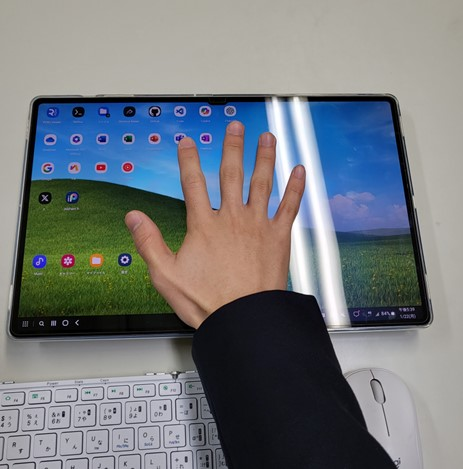
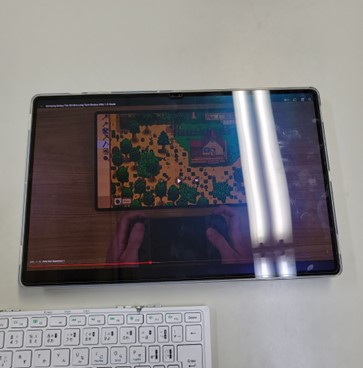
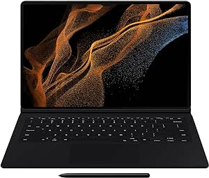
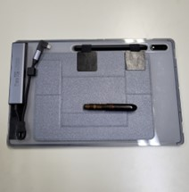
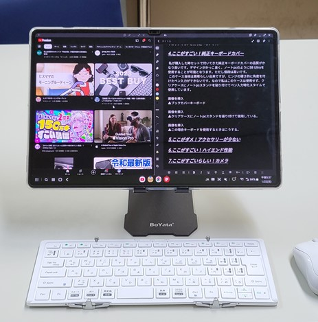

導入
こんにちは。どぎぬです。
今回は半年前に購入したsamsung社の巨大タブレット、Galaxy Tab S8 Ultraのレビュー記事を書いてみたいと思います。キーボードカバーもセットで購入したのでそのレビューもしていきます。
まずこのスマホを買うべきか否かを言うと、「予算が無限で大きいタブレットが好きなら買い」です。以下にその理由を書いているので是非見ていってください。

▲こんなにデカイ！S8 Ultra
1.ここがダメ！価格
まずは最大の注意点から。価格が高すぎます。私は最大スペックのキーボードカバー付きなので中古のくせに特別に高く購入（14万円）、しているので例外かもしれませんが、それを抜きにしても中古価格10万円は、同じSoC（cpu）のxiaomi pad 6が5万円であることを考えると特別に高いです。ただし特別にデカイです。
2.ここがすごい！デカさ
そう、このタブレットの最大のすごいところは、限りなくデカイところです。果てしなくデカイです。14.6インチというサイズは、メジャーとされているタブレットの中では間違いなく最もデカイです。そのデカさ故にあらゆる娯楽を最大サイズで見ることができます。そのデカさ故にフルサイズでノートをとりながら、フルサイズで教科書を表示できます。そのデカさ故にフルサイズでyoutubeを見ながら、同時にフルサイズでブラウザを見て、さらにはXなんかも見れます。そのデカさが、このタブレットの最大の価値です。

▲youtubeがクソデカい！
3.ここがダメ！デカさ
ただし、デカすぎて持ち運びには不便です。ノートパソコンくらいのサイズなので、小さめのバッグには入りません。大きめのバッグやリュックでないと持ち運べないです。
4.ここがすごい！純正キーボードカバー
私が購入した時セットで付いてきた純正キーボードカバーの品質がかなり良いです。デザインがかっこ良く、ノートpcのようにS8 Ultraを使用することが可能となります。ただし値段は高いです（3万円な上にあまり売っていない）。 このケース自体は素晴らしい出来ですが、ヒンジがもう少し頑丈だと良かったかなと思います。

▲純正キーボードカバー

▲クリアケースにノートpcスタンドを張り付けて使用している。

▲この場合キーボードを使用するときはこうする。
5.ここがダメ！アプリの最適化
大きい画面が特徴のこのタブレット、アプリの最適化が追いついていません。多くのアプリがタブレットモードに対応しておらず、大画面を活かした使い方ができません。これはAndroidタブレット全体の課題でもありますが、このサイズのタブレットでは特に顕著です。
6.ここがすごい！バッテリー持ち
大容量バッテリー搭載なので、一度充電すればかなりの時間使えます。普段の使用では2日以上持ちますし、軽めの使用なら3日以上も可能です。これは非常に便利で、外に持ち運ぶ際にも充電の心配を減らしてくれます。
まとめ
以上がGalaxy Tab S8 Ultraの半年使って感じたいいところ、ダメなところです。デカイという特長が際立つ一方で、それ故のデメリットも確かに存在します。購入前にしっかりと検討することが重要ですが、大画面を活かした使い方ができることで、多くの人にとって満足度の高い製品であることは間違いありません。